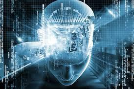

Topic

Artificial Intelligence can be understood as a simulation of human intelligence. A simulation of human intelligence means that any task performed by a program or a machine will be carried out in the same way in which a human being would have done it.
Artificial intelligence cannot be given a single line definition. It has an ultra-wide scope to deal with problems and to learn through past experiences. The core part of artificial intelligence is the algorithms.
AI demonstrates some of the behavior that is linked with human intelligence such as planning, reasoning, learning, manipulation, creativity, and more.
The concept of what AI is and what it can do has changed from time to time. But the core idea can be explained as machines that can think and act like humans.
Developers and researchers are constantly working towards making the machines capable of interpreting the world around and picking up change whenever required.
These are some of the basic characteristics of a human being and machines are being taught extensively for a decade through algorithms and programs.
Different Types Of AI